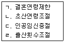

이용사 (2009-01-18 기출문제)
1과목: 임의 과목 구분
1. 빗에 대한 설명으로 적합하지 않은 것은?
- 빗 전체의 두께는 균등해야 한다.
- 빗 등과 빗 몸체는 안정성이 있어야 한다.
- 빗살은 균등하며 빗살 끝이 너무 뾰족하지 않아야 한다.
- 빗 전체가 약간 구부러져 있어야 한다.
(정답률: 77%)

2. 이용작품의 시술과정 순서로 옳은 것은?(문제 오류로 정답이 정확하지 않습니다. 정답지를 찾지못하여 임의 정답 1번으로 설정하였습니다. 정답을 아시는 분께서는 오류 신고를 통하여 정답 입력 부탁 드립니다.)
- 소재 → 구상 → 제작 → 마무리
- 구상 → 소재 → 제작 → 마무리
- 제작 → 마무리 → 소재 → 구상
- 마무리 → 소재 → 구상 → 제작
(정답률: 88%)
3. 두발의 탈염(color remove, 또는 dye remove)이란?
- 두발부분만 염색하는 것
- 두발에 염모제를 사용하여 물을 들이는 것
- 두발의 색을 빼어내거나 제거시키는 것
- 염모제로 염색된 두발의 새로 자란 부분만을 물을 들이는 것
(정답률: 64%)
4. 정발사 둥근 얼굴에 조화를 이루는 두발형이 될 수 있는 가르마의 기준으로 가장 적합한 것은?(문제 오류로 정답이 정확하지 않습니다. 정답지를 찾지못하여 임의 정답 1번으로 설정하였습니다. 정답을 아시는 분께서는 오류 신고를 통하여 정답 입력 부탁 드립니다.)
- 7:3
- 8:2
- 9:1
- 5:5
(정답률: 90%)
5. 커트용 가위의 선정방법에 대한 설명 중 틀린 것은?
- 날의 두께가 얇고 회전축이 강한 것이 좋다.
- 도금된 것이 좋다.
- 날의 견고함이 양쪽 골고루 똑같아야 한다.
- 손가락 넣는 구멍이 적합해야 한다.
(정답률: 80%)
6. 삼푸시의 대상 부위와 가장 거리가 먼 것은?
- 전두부
- 미간부
- 좌･우 귀 상부
- 후두 하부
(정답률: 67%)
7. 면체술에 관한 설명으로 틀린 것은?
- 면도칼을 잡는 방법을 안면부위에 따라 바꾸어 가면서 시술한다.
- 면체술시 시술자가 정확한 위치에 서야 안정감이 있다.
- 면체술시 상처가 나지 않게 하며 솜털까지 깍는다.
- 면체술은 턱부위 만을 대상으로 한다.
(정답률: 45%)
8. 염색 시술시 일반적으로 원하는 색깔보다 짙은 색으로 염색을 해야 좋은 계절은?(문제 오류로 정답이 정확하지 않습니다. 정답지를 찾지못하여 임의 정답 1번으로 설정하였습니다. 정답을 아시는 분께서는 오류 신고를 통하여 정답 입력 부탁 드립니다.)
- 봄
- 여름
- 가을
- 겨울
(정답률: 56%)
9. 틴닝 가위를 사용하는 목적으로 가장 적합한 것은?
- 전체 모발을 잘라내기 위해서
- 윗머리를 짧게 자르기 위해서
- 전체 머리숱을 고르기 위해서
- 아이롱에 적합한 헤어를 만들기 위하여
(정답률: 84%)
10. 피부와 근육을 엄지와 다른 손가락을 사용해서 주물러서 푸는 방법은?
- 경찰법
- 압박법
- 유연법
- 진동법
(정답률: 54%)
11. 헤어포마드에 대한 설명 중 틀린 것은?(문제 오류로 정답이 정확하지 않습니다. 정답지를 찾지못하여 임의 정답 1번으로 설정하였습니다. 정답을 아시는 분께서는 오류 신고를 통하여 정답 입력 부탁 드립니다.)
- 우리나라에서는 광물성 포마드가 많이 쓰였다.
- 포마드의 작용은 두발에 윤기를 주기 위한 방법이다.
- 포마드는 두발에 유지를 보충하고 정발을 손쉽게 하기 위함이다.
- 포마드는 두발을 건조시킨 다음 골고루 바른다
(정답률: 64%)
12. 이용 사인보드에 대한 설명으로 옳은 것은?
- 우리나라만 사용한다.
- 우리나라와 일본만 사용한다.
- 유럽에서만 사용한다.
- 전 세계가 통용하여 사용한다.
(정답률: 71%)
13. 조발술시 일반적으로 사용하지 않는 기구는?
- 가위
- 빗
- 바리캉
- 아이론
(정답률: 72%)
14. 광물성 포마드와 관계가 가장 먼 것은?(문제 오류로 정답이 정확하지 않습니다. 정답지를 찾지못하여 임의 정답 1번으로 설정하였습니다. 정답을 아시는 분께서는 오류 신고를 통하여 정답 입력 부탁 드립니다.)
- 두발의 때가 잘 지며 두발에 영양을 준다.
- 고형 파라핀이 함유되어 있다.
- 와세린이 함유되어 있다.
- 오래 사용하면 두발이 붉게 탈색된다.
(정답률: 51%)
15. 스포츠 머리형으로 조발하려고 할 때 어느 부분부터 먼저 시작해야 가장 정확한 두발형을 이룰 수 있는가?(문제 오류로 정답이 정확하지 않습니다. 정답지를 찾지못하여 임의 정답 1번으로 설정하였습니다. 정답을 아시는 분께서는 오류 신고를 통하여 정답 입력 부탁 드립니다.)
- 전두부의 전발부터 자른다.
- 정수리의 곡부터 자른다.
- 측두부의 양빈부터 자른다.
- 후두부의 포부터 자른다.
(정답률: 53%)
16. 다음 중 탈모를 방지하기 위한 세발 방법으로 가장 적합한 것은?
- 두발의 먼지와 지방을 제거할 정도로 손바닥으로 마사지하여 샴푸한다.
- 모근을 튼튼하게 해주기 위해 손톱으로 적당이 자극을 주면서 샴푸한다.
- 두피와 모근을 마사지 하듯 손가락 끝 부위로 샴푸한다.
- 모근에 자극을 주어 혈액순환에 도움이 되도록 브러시로 샴푸한다.
(정답률: 62%)
17. 아이론(iron)을 이용한 펌시술 과정에 필요한 도구로 가장 적합하게 나열된 것은?(오류 신고가 접수된 문제입니다. 반드시 정답과 해설을 확인하시기 바랍니다.)
- 아이론, 빗, 모자, 블로우 드라이어, 린스
- 펌 용제, 아이론, 빗, 비닐 캡, 어깨 보, 망
- 바리캉, 레이저, 빗, 망
- 분무기, 어깨 보, 비닐 캡, 망
(정답률: 25%)
18. 수정커트 중에서 찔러 깎기 기법은 어느 경우에 사용되어야 가장 적합한가?
- 면제라인 수정 시
- 뭉쳐 있는 두발숱 부분의 색채 수정 시
- 전두부 수정 시
- 천정부 수정 시
(정답률: 43%)
19. 레이저(razor) 커팅 후 머리카락 절단면을 확대경으로 확인한다면 어떤 모양으로 보이는가?
- 연필을 수평으로 절단한 모양
- 대나무를 직각으로 절단한 모양
- 대나무를 대각선으로 절단한 모양
- 연필을 깍아 놓은 듯한 모양
(정답률: 42%)
20. 1955년 프랑스 이용기술 고등 연맹에서 발표한 장티용 라인(Gentilhome line) 작품 설명으로 가장 적합한 것은?(문제 오류로 정답이 정확하지 않습니다. 정답지를 찾지못하여 임의 정답 1번으로 설정하였습니다. 정답을 아시는 분께서는 오류 신고를 통하여 정답 입력 부탁 드립니다.)
- 전체 스타일을 스퀘어로 각을 강조하였다.
- 귀족을 의미하는 뜻으로 작품명을 정하였다.
- 가르마를 기준으로 각각 원형을 이루도록 하였다.
- 전체가 수평을 이루어 중년에 맞는 스타일이다.
(정답률: 63%)
2과목: 임의 과목 구분
21. 비타민이 결핍되었을 때 발생하는 질병의 연결이 틀린 것은?
- 비타민 B1 - 각기증
- 비타민 D - 괴혈증
- 비타민 A - 야맹증
- 비타민 E - 불임증
(정답률: 46%)
22. 집 주위에 있는 쥐를 없애는 방법 중 가장 항구적인 방법은?
- 약제를 사용한다.
- 천적을 사용한다.
- 쥐틀 등을 사용한다.
- 환경을 정비한다.
(정답률: 68%)
23. 매개곤충과 전파하는 전염병의 연결이 틀린 것은?
- 진드기 - 유행성출혈열
- 모기 - 일본뇌염
- 파리 - 사상충
- 벼룩 - 페스트
(정답률: 59%)
24. 다음 중 감염형 식중독에 속하는 것은?(문제 오류로 정답이 정확하지 않습니다. 정답지를 찾지못하여 임의 정답 1번으로 설정하였습니다. 정답을 아시는 분께서는 오류 신고를 통하여 정답 입력 부탁 드립니다.)
- 살모넬라 식중독
- 보툴리누스 식중독
- 포도상구균 식중독
- 웨치균 식중독
(정답률: 57%)
25. 장티푸스에 대한 설명으로 옳은 것은?
- 식물매개 전염병이다.
- 우리나라에서는 제2군 법정전염병이다.
- 대장점막에 궤양성 병변을 일으킨다.
- 일종의 열병으로 경구침입 전염병이다.
(정답률: 50%)
26. 전염병 발생시 일반인이 취하여야 할 사항으로 적절하지 않은 것은?
- 환자를 문병하고 위로한다.
- 예방접종을 받도록 한다.
- 주위 환경을 청결히 하고 개인위생에 힘쓴다.
- 필요한 경우 환자를 격리한다.
(정답률: 64%)
27. 다음 중 직업병으로만 구성된 것은?
- 열중증 - 잠수병 - 식중독
- 열중증 - 소음성난청 - 잠수병
- 열중증 - 소음성난청 - 폐결핵
- 열중증 - 소음성난청 - 되퇴부골절
(정답률: 60%)
28. 다음 중 체온조절기능에 대한 설명으로 옳은 것은?(문제 오류로 정답이 정확하지 않습니다. 정답지를 찾지못하여 임의 정답 1번으로 설정하였습니다. 정답을 아시는 분께서는 오류 신고를 통하여 정답 입력 부탁 드립니다.)
- 인체는 화학적 조절기능으로 체내에서 열생산을 한다.
- 피부는 열방산 기능보다 열생산 기능이 더 활발하다.
- 신체는 신진대사만으로 열을 생산한다.
- 신체와 환경과의 열교환 현상은 없다.
(정답률: 50%)
29. 보건기획이 전개되는 과정으로 옳은 것은?(문제 오류로 정답이 정확하지 않습니다. 정답지를 찾지못하여 임의 정답 1번으로 설정하였습니다. 정답을 아시는 분께서는 오류 신고를 통하여 정답 입력 부탁 드립니다.)
- 전제 - 예측 - 목표설정 - 구체적 행동계획
- 전제 - 평가 - 목표설정 - 구체적 행동계획
- 평가 - 환경분석 - 목표설정 - 구체적 행동계획
- 환경분석 - 사정 - 목표설정 - 구체적 행동계획
(정답률: 45%)
30. 다음 보기에서 가족계획에 포함되는 것만 골라 나열한 것은?

- ㄱ, ㄴ, ㄷ
- ㄱ, ㄷ
- ㄴ, ㄹ
- ㄱ, ㄴ, ㄷ, ㄹ
(정답률: 35%)
31. 다음 중 물리적 소독법에 속하지 않는 것은?
- 건열 멸균법
- 고압증기 멸균법
- 크레졸 소독법
- 자비 소독법
(정답률: 61%)
32. 일반적인 음용수로서 적합한 잔류염소량(유리잔류염소를 말함) 기준은?
- 250㎎/L 이하
- 4㎎/L 이하
- 2 ㎎/L 이하
- 0.1 ㎎/L 이하
(정답률: 41%)
33. 소독약품의 구비 조건이 아닌 것은?
- 살균력이 있을 것
- 부식성이 없을 것
- 경제적일 것
- 사용방법이 어려울 것
(정답률: 84%)
34. E.O가스 멸균법이 고압증기 멸균법에 비해 장점이라 할 수 있는 것은?(문제 오류로 정답이 정확하지 않습니다. 정답지를 찾지못하여 임의 정답 1번으로 설정하였습니다. 정답을 아시는 분께서는 오류 신고를 통하여 정답 입력 부탁 드립니다.)
- 멸균 후 장기간 보존이 가능하다.
- 멸균 시 소요되는 비용이 저렴하다.
- 멸균 조작이 쉽고 간단하다.
- 멸균 시간이 짧다.
(정답률: 41%)
35. 다음 소독약 중 가장 독성이 낮은 것은?(문제 오류로 정답이 정확하지 않습니다. 정답지를 찾지못하여 임의 정답 1번으로 설정하였습니다. 정답을 아시는 분께서는 오류 신고를 통하여 정답 입력 부탁 드립니다.)
- 석탄산
- 승홍수
- 에틸알코올
- 포르말린
(정답률: 34%)
36. 석탄산, 알코올, 포르말린 등의 소독제가 가지는 소독의 주된 원리는?
- 균체 원형질 중의 탄수화물 변성
- 균체 원형질 중의 지방질 변성
- 균체 원형질 중의 단백질 변성
- 균체 원형질 중의 수분 변성
(정답률: 53%)
37. 다음 중 여드름 짜는 기계를 소독하지 않고 사용했을 때 감염 위험이 큰 질병은?
- 후천성면역결핍증
- 결핵
- 장티푸스
- 이질
(정답률: 46%)
38. 미용현장의 감염관리를 위한 방법 중 가장 적절한 것은?(문제 오류로 정답이 정확하지 않습니다. 정답지를 찾지못하여 임의 정답 1번으로 설정하였습니다. 정답을 아시는 분께서는 오류 신고를 통하여 정답 입력 부탁 드립니다.)
- 화장실 세면대에는 고체비누를 사용하도록 준비 한다.
- 사용한 레이저나 가위는 깨끗이 씻고 말려 다른 고객에게 다시 사용한다.
- 작업장의 환경은 환기와 통풍보다는 냉･온방 시설이 잘 되어야 한다.
- 화장실에는 펌프로 된 물비누와 일회용 종이 타올을 비치한다.
(정답률: 45%)
39. 다음 중 올바른 도구 사용법이 아닌 것은?
- 시술도중 바닥에 떨어뜨린 빗을 다시 사용하지 않고 소독한다.
- 더러워진 빗과 브러쉬는 소독해서 사용해야 한다.
- 에머리보드는 한 고객에게만 사용한다.
- 일회용 소모품은 경제성을 고려하여 재사용한다.
(정답률: 83%)
40. 고압증기멸균법을 실시할 때 온도, 압력, 소요시간으로 가장 알맞은 것은?
- 71℃에 10 lbs 30분간 소독
- 1⑤℃에 15 lbs 30분간 소독
- 121℃에 15 lbs 20분간 소독
- 211℃에 10 lbs 10분간 소독
(정답률: 33%)
3과목: 임의 과목 구분
41. 다음 중 외부로부터 충격이 있을 때 완충작용으로 피부를 보호하는 역할을 하는 것은?(문제 오류로 정답이 정확하지 않습니다. 정답지를 찾지못하여 임의 정답 1번으로 설정하였습니다. 정답을 아시는 분께서는 오류 신고를 통하여 정답 입력 부탁 드립니다.)
- 피하지방과 모발
- 한선과 피지선
- 모공과 모낭
- 외피각질층
(정답률: 52%)
42. 여드름이 많이 났을 때의 관리방법으로 가장 거리가 먼 것은?
- 유분이 많은 화장품을 사용하지 않는다.
- 클린징을 철저히 한다.
- 요오드가 많이 든 음식을 섭취한다.
- 적당한 운동과 비타민류를 섭취한다.
(정답률: 57%)
43. 다음 중 세포 재생이 더 이상 되지 않으며 기름샘과 땀샘이 없는 것은?(문제 오류로 정답이 정확하지 않습니다. 정답지를 찾지못하여 임의 정답 1번으로 설정하였습니다. 정답을 아시는 분께서는 오류 신고를 통하여 정답 입력 부탁 드립니다.)
- 흉터
- 티눈
- 두드러기
- 습진
(정답률: 73%)
44. 눈꺼풀에 색감을 주어 입체감을 살려 눈의 표정을 강조하는 화장품은?
- 아이라이너
- 아이새도우
- 아이브로우 펜슬
- 마스카라
(정답률: 57%)
45. 피부구조에 있어 물이나 일부의 물질을 통과시키지 못하게 하는 흡수방어벽 층은 어디에 있는가?(문제 오류로 정답이 정확하지 않습니다. 정답지를 찾지못하여 임의 정답 1번으로 설정하였습니다. 정답을 아시는 분께서는 오류 신고를 통하여 정답 입력 부탁 드립니다.)
- 투명층과 과립층 사이
- 각질층과 투명층 사이
- 유극층과 기저층 사이
- 과립층과 유극층 사이
(정답률: 41%)
46. 메이크업에서 T.P.O에 속하지 않는 것은?
- 시간
- 장소
- 체형
- 목적
(정답률: 75%)
47. 다음 중 필수 아미노산에 속하지 않는 것은?
- 아르기닌
- 리신
- 히스티딘
- 글리신
(정답률: 30%)
48. 건강한 손톱의 특징이 아닌 것은?
- 네일 베드에 잘 부착되어 있어야 한다.
- 연한 핑크색이 나며 둥근 모양의 아치형이다.
- 매끈하게 윤이 흘러야 한다.
- 단단하고 두꺼우며 딱딱해야 한다.
(정답률: 65%)
49. 기미를 악화시키는 주요한 원인이 아닌 것은?
- 경구 피임약의 복용
- 임신
- 자외선 차단
- 내분비 이상
(정답률: 57%)
50. 풋고추, 당근, 시금치, 달걀노른자에 많이 들어 있는 비타민으로 피부각화 작용을 정상적으로 유지시켜 주는 것은?
- 비타민 C
- 비타민 A
- 비타민 K
- 비타민 D
(정답률: 51%)
51. 공중위생관리법시행규칙에 규정된 이･미용기구의 소독 기준으로 적합한 것은?(문제 오류로 정답이 정확하지 않습니다. 정답지를 찾지못하여 임의 정답 1번으로 설정하였습니다. 정답을 아시는 분께서는 오류 신고를 통하여 정답 입력 부탁 드립니다.)
- 1cm2당 85㎼ 이상의 자외선을 10분 이상 쬐어준다.
- 100℃ 이상의 건조한 열에 10분 이상 쐬어준다.
- 석탄산수(석탄산 3%, 물 97%)에 10분 이상 담가 둔다.
- 100℃ 이상의 습한 열에 10분 이상 쐬어준다. .
(정답률: 38%)
52. 이･미용업의 영업자는 연간 몇 시간의 위생교육을 받아야 하는가?(관련 규정 개정전 문제로 여기서는 기존 정답인 1번을 누르면 정답 처리됩니다. 자세한 내용은 해설을 참고하세요.)
- 4시간
- 8시간
- 10시간
- 12시간
(정답률: 57%)
53. 신고를 하지 않고 영업소 명칭(상호)을 바꾼 경우에 대한 1차 위반시의 행정처분 기준은?
- 주의
- 경고 또는 개선명령
- 영업정지 10일
- 영업정지 1월
(정답률: 35%)
54. 이･미용업에 있어 위반행위의 차수에 따른 행정처분 기준은 최근 어느 기간 동안 같은 위반 행위로 행정 처분을 받은 경우에 적용되는가?(문제 오류로 정답이 정확하지 않습니다. 정답지를 찾지못하여 임의 정답 1번으로 설정하였습니다. 정답을 아시는 분께서는 오류 신고를 통하여 정답 입력 부탁 드립니다.)
- 6월
- 1년
- 2년
- 3년
(정답률: 55%)
55. 이･미용업의 신고에 대한 설명으로 옳은 것은?(문제 오류로 정답이 정확하지 않습니다. 정답지를 찾지못하여 임의 정답 1번으로 설정하였습니다. 정답을 아시는 분께서는 오류 신고를 통하여 정답 입력 부탁 드립니다.)
- 이･미용사 면허를 받은 사람만 신고할 수 있다.
- 일반인 누구나 신고할 수 있다.
- 1년 이상의 이･미용업무 실무경력자가 신고할 수 있다.
- 미용사자격증을 소지하여야 신고할 수 있다.
(정답률: 81%)
56. 과태료 처분에 불복이 있는 자는 그 처분의 고지를 받은 날부터 며칠 이내에 처분권자에게 이의를 제기할 수 있는가?
- 7일
- 10일
- 15일
- 30일
(정답률: 50%)
57. 공중위생영업소를 개설하고자 하는 자는 원칙적으로 언제까지 위생교육을 받아야 하는가?(문제 오류로 정답이 정확하지 않습니다. 정답지를 찾지못하여 임의 정답 1번으로 설정하였습니다. 정답을 아시는 분께서는 오류 신고를 통하여 정답 입력 부탁 드립니다.)
- 개설하기 전
- 개설 후 3개월 내
- 개설 후 6개월 내
- 개설 후 1년 내
(정답률: 61%)
58. 다음 중 공중위생관리법의 궁극적인 목적은?
- 공중위생영업 종사자의 위생 및 건강관리
- 공중위생영업소의 위생관리
- 위생수준을 향상시켜 국민의 건강증진에 기여
- 공중위생영업의 위상 향상
(정답률: 75%)
59. 영업소 외의 장소에서 업무를 행한 때에 대한 1차 위반시 행정 처분 기준은?(관련 규정 개정전 문제로 여기서는 기존 정답인 4번을 누르면 정답 처리됩니다. 자세한 내용은 해설을 참고하세요.)
- 200만원 이하의 벌금
- 300만원 이하의 벌금
- 영업정지 1월
- 영업정지 3월
(정답률: 37%)
60. 공중위생관리법 상 공중위생영업의 신고를 하고자 하는 경우 반드시 필요한 첨부서류가 아닌 것은?(문제 오류로 정답이 정확하지 않습니다. 정답지를 찾지못하여 임의 정답 1번으로 설정하였습니다. 정답을 아시는 분께서는 오류 신고를 통하여 정답 입력 부탁 드립니다.)
- 영업시설 및 설비개요서
- 교육필증
- 이･미용사 자격증
- 면허증 원본
(정답률: 44%)